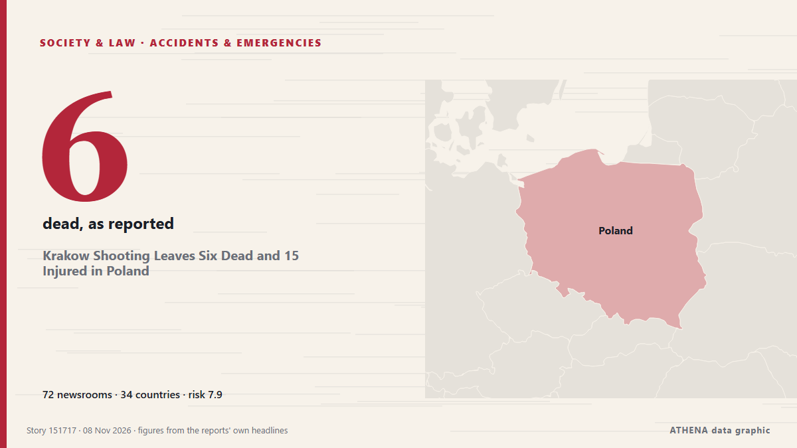

Krakow Shooting Leaves Six Dead and 15 Injured in Poland

Polish Prime Minister Donald Tusk says police are investigating after 'tragic shooting' in second-largest city. από Al Jazeera English
Αναφέρθηκε ανεξάρτητα από 73 μέσα σε 34 χώρες από τις 7 Νοε, πρώτο το The Canadian Press (via CityNews)· η κάλυψη εξασθενεί. Το ATHENA εκτιμά τον κίνδυνο υψηλό (7.6/10), κυρίως λόγω της σοβαρότητάς του και της εμβέλειάς του — από 3.9 πριν από 24 ώρες. Βεβαιότητα 87% (υψηλή): το επιβεβαιώνουν 73 ανεξάρτητα μέσα, μέση αξιοπιστία 74%. Μέσα ανά χώρα: Ιρλανδία (5), Ηνωμένο Βασίλειο (5), Ινδία (3). Κάλυψη: 7 Νοε έως 7 Νοε, 2 ώρες.
Γιατί έχει σημασία: Οι νομικές αλλαγές και οι αλλαγές πολιτικής μεταβάλλουν δικαιώματα, υποχρεώσεις και δημόσιες υπηρεσίες για όσους αφορούν.
Τι άλλαξε: 111 νέες αναφορές από 72 μέσα στο 24ωρο έως 8 Νοε.
Πρώτη διατύπωση: Shooting in Polish city of Krakow leaves people dead and injured
Οι τίτλοι των ειδήσεων παρουσιάζονται στα αγγλικά, όπως δημοσιεύτηκαν.
Με μια ματιά
Επιλέγεται, βαθμολογείται και γράφεται από τη δημοσιευμένη μεθοδολογία του ATHENA. Κανένας συντάκτης δεν παρεμβαίνει σε μεμονωμένα γεγονότα. Πώς παράγεται ›
| 07 Nov 15:10 UTC | 25 |
|---|---|
| 07 Nov 16:10 UTC | 19 |
| 07 Nov 17:10 UTC | 17 |
| 07 Nov 18:10 UTC | 9 |
| 07 Nov 19:10 UTC | 7 |
| 07 Nov 20:10 UTC | 12 |
| 07 Nov 21:10 UTC | 12 |
| 07 Nov 22:10 UTC | 4 |
| 07 Nov 23:10 UTC | 3 |
| 08 Nov 00:10 UTC | 1 |
| 08 Nov 01:10 UTC | 1 |
| 08 Nov 02:10 UTC | 1 |
| 07 Nov 15:39 UTC | 3.9 |
|---|---|
| 07 Nov 16:00 UTC | 5.5 |
| 07 Nov 18:25 UTC | 7.8 |
| 07 Nov 20:11 UTC | 7.3 |
| 07 Nov 22:23 UTC | 8.1 |
| 08 Nov 00:45 UTC | 7.4 |
| 08 Nov 01:25 UTC | 7.9 |
| 08 Nov 02:30 UTC | 7.6 |
Γιατί αυτοί οι αριθμοί
Σημασία
Κίνδυνος
Βεβαιότητα
Η κάλυψη — ποιος το ανέφερε και πότε
ο τίτλος όπως δημοσιεύτηκε · ανοίγει το πρωτότυπο- The Canadian Press (via CityNews) · ΚαναδάςPolish gunman who killed 6 people in Krakow has ‘ultranationalistic’ views, authorities say
- Times of India · ΙνδίαAt least 6 killed, 15 injured in Poland shooting; gunman shot
- APA (English) · ΑζερμπαϊτζάνTwo killed, at least 10 injured in shooting in Polish city of Krakow
- Al Jazeera English · ΚατάρAt least five people killed in shooting in Poland’s Krakow
- France 24 English · ΓαλλίαGunman who killed at least six people in Krakow had ‘far-right’ views, Polish government says
- RTÉ News · ΙρλανδίαGunman 'fascinated by far-right' kills six in Krakow
- Anadolu Agency (English) · ΤουρκίαShooting near tourist hotspot in Poland's Krakow leaves 5 dead, 12 injured
- Cyprus Mail · ΚύπροςFive killed in shooting in main square of Polish city of Krakow
- Belfast Telegraph · Ηνωμένο ΒασίλειοSuspect in Krakow shooting that killed six ‘fascinated with far-right views’
- DW English · ΓερμανίαAt least 6 killed in shooting in Polish city of Krakow, police say
- Indian Express · ΙνδίαHorror in Krakow: Gunman opens fire in busy tourist square, 6 killed
- Notes from Poland · ΠολωνίαSix killed in terrorist shooting in Polish city of Kraków
- Asharq Al-Awsat (English) · Σαουδική Αραβία5 People Were Killed, More than a Dozen Injured in Krakow Shooting
- The Straits Times · ΣιγκαπούρηFive people dead after shooting in Polish city of Krakow
- The Straits Times · ΣιγκαπούρηGunman ‘fascinated by far-right’ kills six in Krakow, Poland
- TASS (English) · ΡωσίαDeath toll in Krakow shooting rises to five — police
- Arab News · Σαουδική ΑραβίαPolish gunman kills four women and two men in Krakow’s main square
- CBC News · ΚαναδάςPolish police say gunman kills 6 in 'act of terror'; 3 more dead found at suspect's home
- Irish Mirror · ΙρλανδίαFive killed in Krakow Poland shooting as gunman opens fire in Market Square
- NBC News (World) · Ηνωμένες ΠολιτείεςGunman kills 6 in ‘terror attack’ in Poland, officials say; 3 others found dead in his home
- Gulf News · Ηνωμένα Αραβικά ΕμιράταSix killed in mass shooting in Poland's Krakow
- Deccan Herald · ΙνδίαSix dead, 15 injured after shooting Poland's Krakow; gunman shot by police
- Haaretz (English) · ΙσραήλShooter kills six, wounds 15 in main square in Poland's Krakow, police say
- Al Jazeera English · ΚατάρFive killed and at least 10 injured in Krakow shooting
- New Straits Times · ΜαλαισίαFive killed in shooting in main square of Polish city of Krakow
- Manchester Evening News · Ηνωμένο ΒασίλειοKrakow shooting: 5 dead and dozens injured as gunman opens fire in Poland's Main Square
- The Guardian · Ηνωμένο ΒασίλειοKraków shooting latest updates: six killed and more than a dozen injured – as it happened
- Irish Examiner · ΙρλανδίαSix killed and at least 15 injured after gunman opens fire in Krakow
- TheJournal.ie · ΙρλανδίαSix people dead and fifteen wounded in Kraków shooting
- The Age · ΑυστραλίαSix killed after gunman opens fire on tourist hotspot in Krakow
- RTÉ News · ΙρλανδίαAs it happened: Six dead in Krakow 'terror attack'
- Ukrainska Pravda (English) · ΟυκρανίαZelenskyy condemns Kraków shooting as shocking crime
- The Irish News (Belfast) · Ηνωμένο ΒασίλειοFive people killed and more than a dozen injured in Krakow shooting
- TRT World · ΤουρκίαDeadly shooting hits Poland's Krakow
- ABC News Australia · ΑυστραλίαKrakow shooter who killed at least six had 'far-right' views, minister says
- The Independent · Ηνωμένο ΒασίλειοHorrific mass shooting in Krakow as gunman kills six in Polish tourist spot
- Khaleej Times (working feed) · Ηνωμένα Αραβικά ΕμιράταPoland says five killed in shooting in central Krakow
- China Daily — page reader · ΚίναShooting in Poland's Krakow leaves people dead, injured
- The New York Times (World) · Ηνωμένες ΠολιτείεςAt Least 6 Dead in Poland After Gunman Opens Fire in Krakow, Police Say
- Euractiv · ΒέλγιοGunman ‘fascinated by far-right’ kills six in Krakow, Poland